| Previous: Civilization II Objects and If Statements | Next: |
Loops and Tables 🔗
Introduction 🔗
Over the past lessons, we’ve been gradually learning about different parts of the Lua Programming Language, and the basics of how they are used. In this lesson, we’ll introduce the last two major components of the language: Loops and Tables. Loops are a way to execute a section of code multiple times and tables are a way to manipulate multiple values at once.
File Update (Temporary Section) 🔗
If you downloaded the ClassicRome scenario for lesson 4 on or before November 26, 2023, then there is a file update that you need to make. Download this zip file, and replace the following two files in the ClassicRome Scenario: LuaCore\generalLibrary.lua and LuaDocumentation\civ.lua. (Alternatively, you could download the new version of the scenario and replace discreteEvents.lua with the copy you made in the last lesson.)
I don’t intend to make a habit of retroactively changing files in these lessons, but I changed the documentation of iterators (which you’ll learn about in this lesson) to match what LuaLS expects.
The Numeric For Loop 🔗
In Lua, loops come in a couple different varieties. We’ll introduce loops by looking at the numeric for loop. In VS Code, open the lua folder within your Test of Time directory, which we worked with during lessons 2 and 3. Open a tab with the conversion.lua file. It should look something like this:
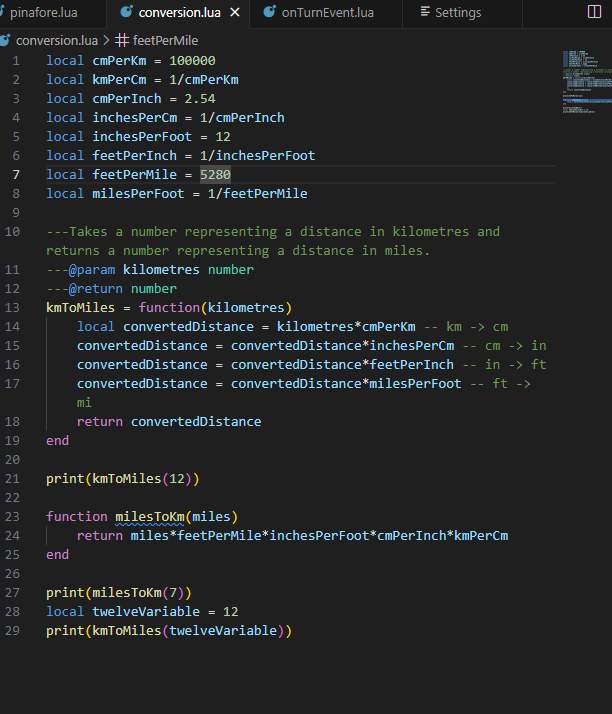
In this file, we convert 3 numbers between miles and kilometres. Until now, if we wanted to print many conversions, we would have to copy and paste each command over and over, and then change the numbers. Now, however, we can use a loop to simplify the process, and reduce typos.
for numKm=1,10 do
print(numKm.." kilometres is "..kmToMiles(numKm).." miles.")
end
Let’s break down this code:
for
The for keyword tells Lua that a for loop is being created.
numKm=1,10
numKm is a local variable to be created for use within the loop. =1,10 means that numKm will first take on a value of 1, then 2, then 3, and so on, incrementing by 1 each time until 10 is reached.
do
print(numKm.." kilometres is "..kmToMiles(numKm).." miles.")
end
The code between do and end will be executed for each value of numKm that the loop specifies. In this case, a message with a unit conversion is printed to the console for each value of numKm. conversion.lua will look like this:
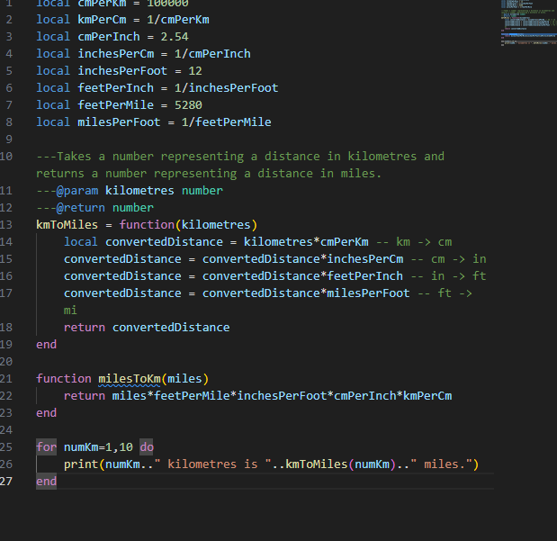
Load a saved game in the Original folder, not ClassicRome and run the script. (The ClassicRome scenario disables global variables, and this file has some.)
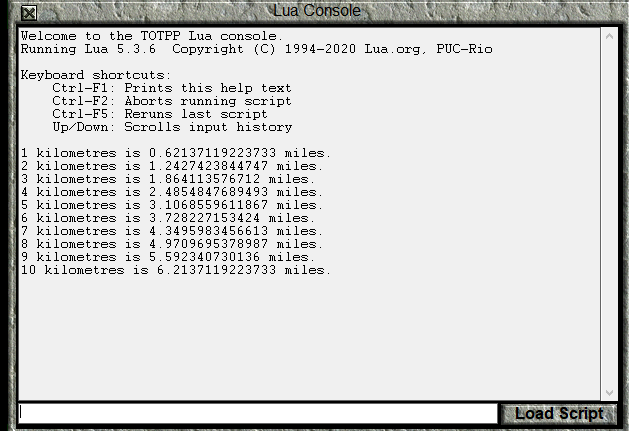
For loop variables do not have to increment by 1. In fact, they can decrement if you prefer. Let’s look at an example:
for numMi=10,1,-2 do
print(numMi.." miles is "..milesToKm(numMi).." kilometres.")
end
The following part is different from the previous example:
numMi=10,1,-2
In this case, numMi starts with a value of 10, and has an ending value of 1. What’s new is that the third number, -2, is the increment value for numMi. In this case, the “increment” actually reduces the value by 2 each time. So, numMi will be 10, then 8, then 6, 4, and, finally 2. The next value after 2 would be 0, but 0 is outside of the values of 10 through 1, so the loop stops there. The loop is not run for the case when numMi is 1 because the increment and starting value didn’t cause it to take on a value of exactly 1.
Add this loop to conversion.lua, save, and run the script again.
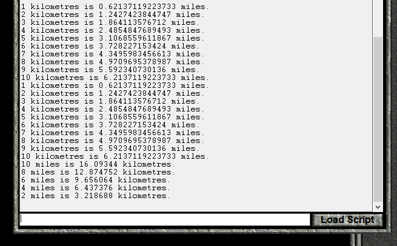
A For Loop in a Function 🔗
Now, let’s do something slightly more complicated. In math,
function factorial(N)
local resultSoFar = 1
for i=N,1,-1 do
resultSoFar = resultSoFar * i
end
return resultSoFar
end
Let’s look at this code:
function factorial(N)
We’ve seen this before. Since there is no local keyword, we’re writing a global function, called factorial, and which has a parameter N.
local resultSoFar = 1
In this function, we’re going to perform the multiplication over multiple “steps,” and at each step, we’re going to keep track of the result that we have computed thus far into the computation. Since the factorial involves multiplication, it is natural to initialize resultSoFar to 1, because anything multiplied by 1 gets itself back.
for i=N,1,-1 do
This time, the loop variable is called i. i is a standard name for a loop variable if you can’t think of anything better. The N means that the initial value of i is set to whatever the current value of N is. The factorial definition requires us to multiply each integer value between -1 and end the loop at 1.
resultSoFar = resultSoFar * i
end
This is the actual “work” of the function. The current integer i is multiplied by the current resultSoFar in order to get a new resultSoFar. When i is N, resultSoFar is 1, and it is set to N to start the calculation. After that, the code effectively progresses left to right on the calculation 1 is reached.
return resultSoFar
After the loop is complete, the resultSoFar is, in fact, the result, so it can be returned.
We can add a nice loop to conversion.lua to print the factorials for 1 through 10.
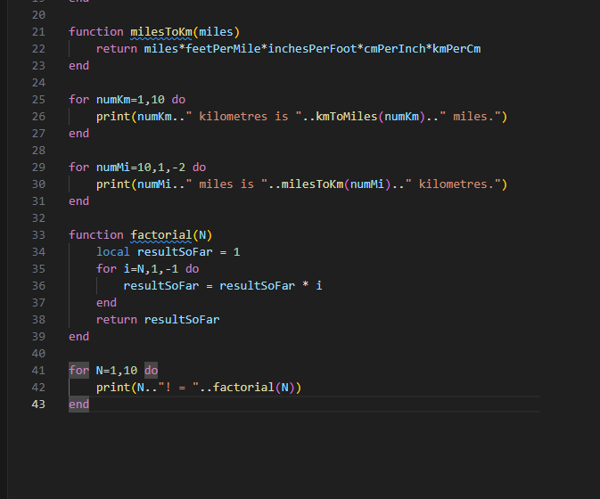

While Loops 🔗
Now, let’s look at a different kind of loop, the while loop. The numeric for loop repeated the loop body a predetermined number of times. The while loop, on the other hand, keeps performing a set of instructions as long as a certain condition is met, and then stops. In fact, if the condition is not met when the while loop is first reached, it won’t be executed even once.
Let’s look at while loop version of the factorial function:
function factorialWhile(N)
local resultSoFar = 1
while N >= 1 do
resultSoFar = resultSoFar*N
N = N-1
end
return resultSoFar
end
function factorialWhile(N)
local resultSoFar = 1
These are the same as the function with the numeric for loop.
while N >= 1 do
This line checks that N is greater than or equal to 1. The >= operator returns true if the number to the left is at least as much as the the number on the right, and false otherwise. If true is returned, the loop body (between do and end) is executed, otherwise, the code skips to the end.
resultSoFar = resultSoFar*N
N = N-1
end
This is the loop body. Once again, we’re multiplying the resultSoFar by the current integer. However, this time we must also increment N, since there is no loop variable this time. This may be the first time in these lessons that I’ve changed the value of a variable that is defined in the function parameters list, but it is allowed. (We could also have just defined another variable if we wanted.)
Once the end is reached, the N >=1 check is made again, and the code keeps executing as long as N is greater than 1.
return resultSoFar
end
As with the numeric for loop, once we exit the loop, the resultSoFar is the final result.
Adding a loop to test this function gives the code:
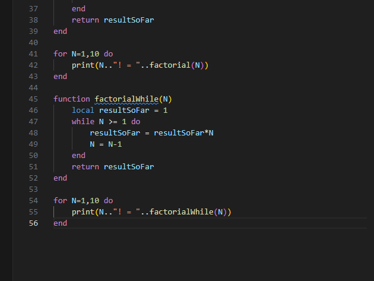
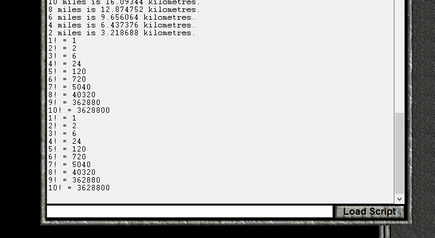
In this example, the while loop is a bit more work than the numeric for loop, since we had to increment a counter ourselves. While loops are useful in situations where you don’t know ahead of time how many times you will need to execute the loop body. This is more likely to be the case when solving more complicated problems, so we will have to wait for future lessons to see some in action.
You should also note that if you choose your condition poorly the while loop will never stop, and you will be forced to close Civ II through the task manager.
Later in this lesson, we’ll look at the generic for loop, but, for now we will turn our attention to Lua tables.
Tables 🔗
Thus far, we have always stored a single value in a variable. This can sometimes be inconvenient for a couple of reasons. The first reason is that sometimes it is much more convenient to manipulate multiple values at once. The second reason is that sometimes we don’t know how how many variables that we’ll need ahead of time. For example, if we’re gathering a list of cities, we will probably not know ahead of time how many cities will be in that list. Lua tables help us get around both of these problems.
A Lua table is a programming object that associates keys with values. Every key can have an associated value. Several keys can have the same value associated with it, but the same key can’t have multiple different values. Another way of saying it is that values can be repeated in a table, but there can only be one of each key. I think that Lua uses the name table because behind the scenes they are hash tables, but reading up on hash tables won’t be of any help programming in Lua.
We will begin by creating a new table. In the lua folder, create a new file called tables.lua, which we will program in during this next section. You should also reload your saved game in the Original folder, to clear the console from earlier in the lesson.
In order to create a table, we use the following syntax:
local myTable = {}
At the moment, myTable doesn’t have any key-value associations. Although any data type except nil can be a table key, we will usually restrict ourselves to numbers and strings for keys. To start, we will assign the value "one" to the key 1:
myTable[1] = "one"
The [] brackets are used to specify that what is inside of them is a table key, which is also sometimes called an index. So, [1] tells Lua that we’re interested in the key 1 of a table, and myTable[1] tells Lua that myTable is the table in question. Since this is all on the left hand side of the = sign, Lua knows that a value is being assigned to that table and key. In this case, the value is "one".
In order to get the value associated with a table’s key, very similar syntax is used:
print(myTable[1])
Once again, the [1] tells Lua that we’re interested in the value assigned to the index 1, and myTable[1] tells that we want the value from the table stored in the myTable variable. Since it is not to the left of an = sign, Lua knows that we want to get the value rather than assign it.
Save and run the script.
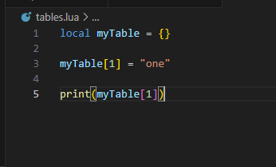
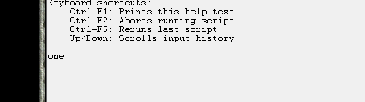
Next, let’s assign another value to myTable. This time, we’ll assign the value 2 to the key "two":
myTable["two"] = 2
print(myTable["two"].." is 2")
We can also use the values of variables as keys or values in a table.
local trois = "trois"
local three = 3
local four = "quatre"
myTable[3] = trois
myTable[four] = 4
print(myTable[three].." is trois")
print(myTable["quatre"].." is 4")
Another characteristic of tables is that if you try to get the value of a key that doesn’t have an assigned value, nil will be returned as the assigned value.
print(tostring(myTable[5]).." is nil")
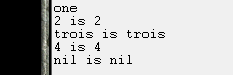
Counting Animals 🔗
Let’s have a little example where we record animals that we’ve “seen”. Whenever we “see” an animal, we’ll call the function spotted to record the animal.
We comment out the previous code, and add this new code:
caesarTotals = {["horse"]=0,["cat"]=0,["dog"]=0}
hannibalTotals = {["horse"]=0,["cat"]=0,["dog"]=0}
function spotted(totals,animal)
totals[animal] = totals[animal] + 1
end
spotted(caesarTotals,"dog")
spotted(caesarTotals,"dog")
spotted(hannibalTotals,"cat")
spotted(caesarTotals,"horse")
spotted(hannibalTotals,"horse")
spotted(hannibalTotals,"dog")
spotted(caesarTotals,"cat")
spotted(hannibalTotals,"cat")
function printTotals()
print("Caesar's totals are: Horses: "..caesarTotals["horse"].." Cats: "..caesarTotals["cat"].." Dogs: "..caesarTotals["dog"])
print("Hannibal's totals are: Horses: "..hannibalTotals["horse"].." Cats: "..hannibalTotals["cat"].." Dogs: "..hannibalTotals["dog"])
end
printTotals()
Let’s go through the code:
caesarTotals = {["horse"]=0,["cat"]=0,["dog"]=0}
hannibalTotals = {["horse"]=0,["cat"]=0,["dog"]=0,}
Here, we’re defining two tables, one table to keep track of how many animals Caesar spotted, and the other to keep track of how many animals Hannibal spotted. These have been made into global variables, so that they can be accessed from the Lua Console if desired.
This time, we’re defining a table with some stuff between the {} brackets. ["horse"]=0 means that the key "horse" should be created with the new table, and that it should be initialised with a value of 0. Each of these initialisations bust be separated with a ,. It is allowed to have or not have a , after the last key (["dog"]=0 vs ["dog"]=0,). So, for these two tables, the keys "horse", "cat", and "dog" are all assigned a value of 0.
function spotted(totals,animal)
totals[animal] = totals[animal] + 1
end
Here, we define the global function spotted, which as two parameters: totals and animal. totals is a table that keeps track of the number of each animal spotted, and animal is a string that represents a particular kind of animal, and which is also a key in a totals table.
The animal key of the totals table is updated by adding 1 to the previous value.
There is something important to note here: the totals table is not returned by the spotted function. It doesn’t have to be. When a variable containing an integer or string is updated, the new value must be assigned to the variable to replace the existing one:
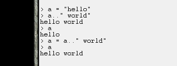
However, tables are different. It is best to think of tables as “things” that just exist, and that what we’re storing in the variable is just the name of the table. We don’t need to update the name of the table when we make a change to the table itself.
spotted(caesarTotals,"dog")
spotted(caesarTotals,"dog")
spotted(hannibalTotals,"cat")
spotted(caesarTotals,"horse")
spotted(hannibalTotals,"horse")
spotted(hannibalTotals,"dog")
spotted(caesarTotals,"cat")
spotted(hannibalTotals,"cat")
Here, Caesar and Hannibal are “spotting” different animals.
function printTotals()
print("Caesar's totals are: Horses: "..caesarTotals["horse"].." Cats: "..caesarTotals["cat"].." Dogs: "..caesarTotals["dog"])
print("Hannibal's totals are: Horses: "..hannibalTotals["horse"].." Cats: "..hannibalTotals["cat"].." Dogs: "..hannibalTotals["dog"])
end
This function just prints the contents of the two tables.
printTotals()
Here, we print the the totals of the tables, based on the “spotted” animals in our script.
Save the file, and run the script. (Remember to comment out the code from the previous section.)
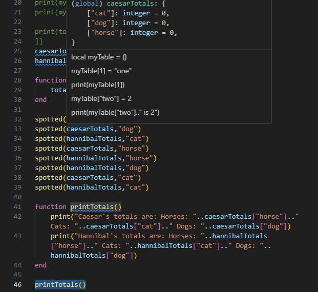

In the console, we can call the spotted and printTotals functions to increment the values further, and see the new ones. Here are some sample commands that I’ve done:
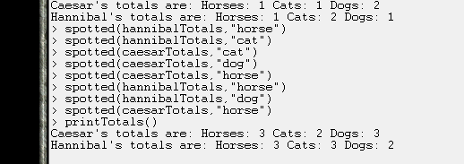
Tip: You can use the up and down arrows to bring up previous commands, so you don’t have to type the entire command each time.
Now, let’s cause an error. Try to “spot” a "cow":
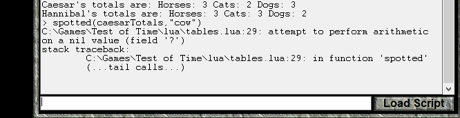
C:\Games\Test of Time\lua\tables.lua:29: attempt to perform arithmetic on a nil value (field '?')
stack traceback:
C:\Games\Test of Time\lua\tables.lua:29: in function 'spotted'
(...tail calls...)
This is line 29:
totals[animal] = totals[animal] + 1
and the error is “attempt to perform arithmetic on a nil value (field ‘?’)”.
This error means that you’re trying to do arithmetic (basic math like addition or subtraction) but one of the values is nil. Why did we get this error? Let’s perform the calculations. First, we replace totals with caesarTotals and animal with "cow", since those are the values that the spotted function was called with:
caesarTotals["cow"] = caesarTotals["cow"] +1
On the Left Hand Side, we’re trying to assign a value to the "cow" key of caesarTotals, so that’s fully simplified. On the Right Hand Side, however, we still have to replace caesarTotals["cow"] with the corresponding value. Since the table caesarTotals does not yet have anything assigned to the "cow" key, nil is considered to be the value:
caesarTotals["cow"] = nil +1
And, here, we see that nil can’t be added to 1, so we get an error.
We should do something when the spotted function is called for a key that isn’t already in the totals table.
One option is to use the error function. This will still cause an error, but the error will be more informative:
function spotted(totals,animal)
if totals[animal] == nil then
error(animal.." is not an animal that can be spotted.")
end
totals[animal] = totals[animal] + 1
end
if totals[animal] == nil then
This line checks if the value for the key animal in the totals table is nil. If it is, we go inside the if statement to find
error(animal.." is not an animal that can be spotted.")
The error command will create an error on this line, and print its argument as part of the error. Change the spotted function, save tables.lua, load the script again, and try to “spot” a "cow" once again:
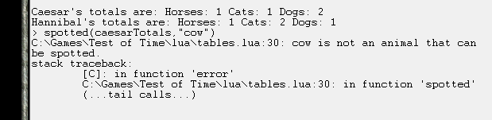
Now, we get the more helpful error that “cow is not an animal that can be spotted.”
However, maybe we don’t want to generate an error. An alternative is to simply do nothing. Let’s look at a different version of spotted:
function spotted(totals,animal)
if totals[animal] then
totals[animal] = totals[animal] + 1
end
end
We only need to look at
if totals[animal] then
In the last lesson I wrote that an if statement of the form
if value then
executes if the value is true and explained the way if statements worked as if the value must be a boolean. I did that for simplicity. In fact, the value between if and then can be any data type. The body of the if statement is executed if the value is “truthy,” and is’t executed if the value is “falsy.” In Lua, all values are “truthy” except false and nil. (This is different from a lot of other programming languages, where some other values like 0 and "" are falsy.)
Since only nil and false are falsy, if table[key] then is a compact way to execute code only if a table has an assigned value for key, as long as false isn’t a value in the table.
That means that this version of the spotted function increments the total if animal is a key in the totals table, and does nothing if it isn’t.
Save this version of spotted, reload tables.lua and try to “spot” a "cow" again. Call caesarTotals["cow"] to check that nothing has been assigned to the "cow" key:
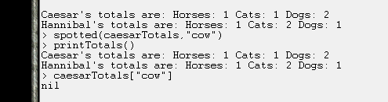
We have another option for dealing with a new key: we can initialize it to 0 before adding 1 to it: